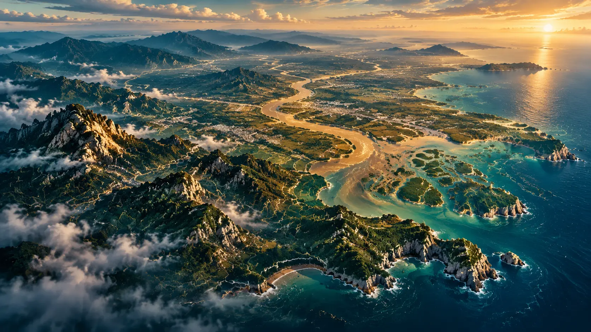
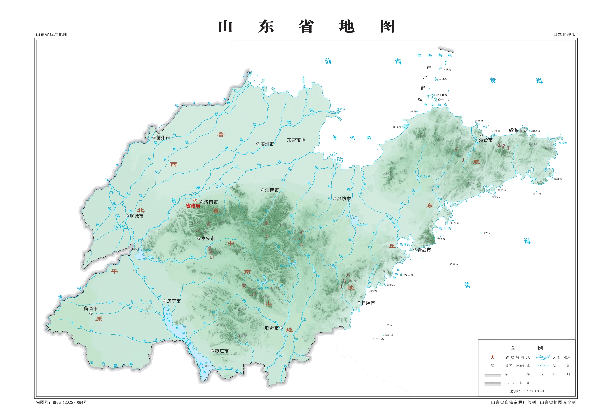
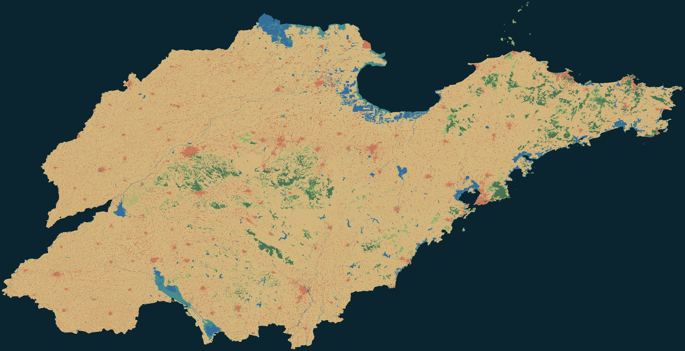
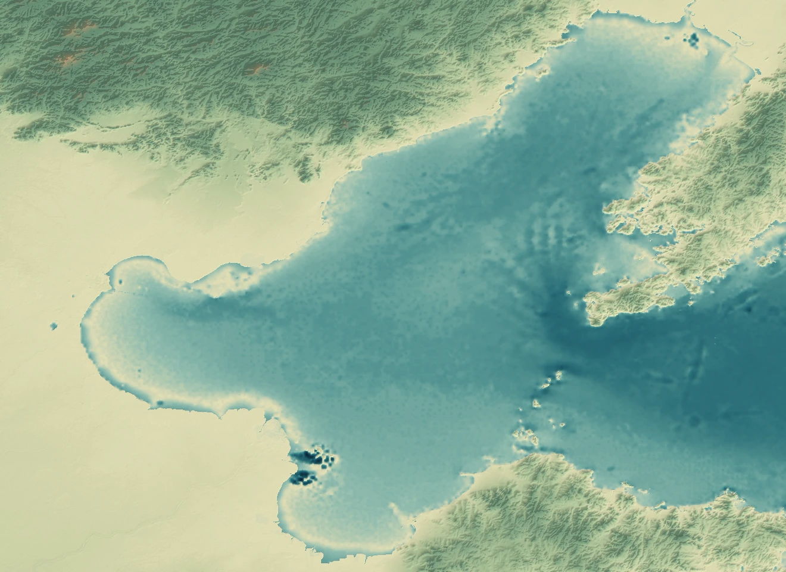
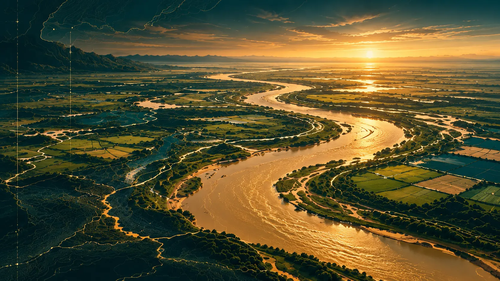
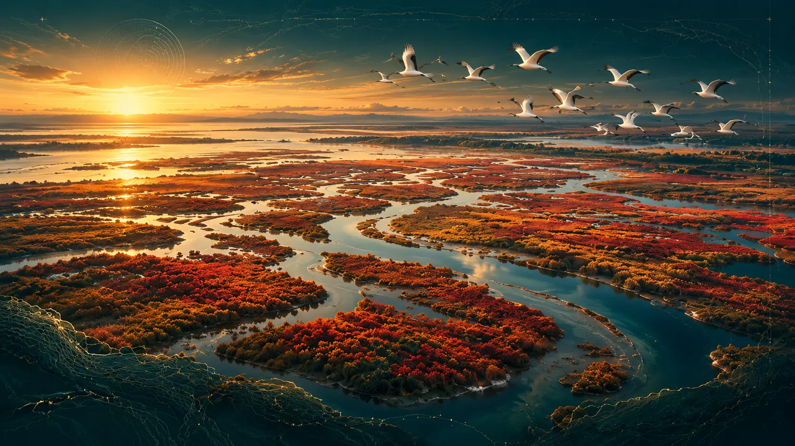

主题视觉
山地之脊
鲁中山地的起伏，与周边平原相接。观察山脊、坡面与谷地如何构成地貌层次。

自然地理、水系与政区三幅标准地图。
保持原页，在图面之间读出空间关系。

放大读图 ⤢自然地理版完整展示山地、河流、湖泊与海湾的标注，作为图志的第一张阅读地图。
从城市进入山东。
读地势，循水脉，看地表。

指向读数 · 点击固定 · 方向键移动点击河段读取长度与河流等级 · 方向键平移
两片带坐标的真实海陆连续格网。
指向任意位置，读取原始格点高程。

移动查看格点 · 点击固定位置四条路线，18,435 个高程样点。
地图上的每一步，都对应剖面上的一处起伏。
DEM 栅格抽样剖面
东西向穿越山东时，地势在哪些位置发生显著变化？
该曲线来自用户提供路线与 DEM 栅格的抽样。它用于观察地形起伏，不能单独推断河床、水位或地表覆盖类型。
以山为骨，以河为脉，以海为境。
从地理现象，读到彼此的联系。
鲁中山地的起伏，与周边平原相接。观察山脊、坡面与谷地如何构成地貌层次。

主题视觉黄河携沙而行，水流与沉积参与塑造平原。顺着河流，理解水与土地的联系。

主题视觉在黄河入海处，泥沙沉积、水盐变化与湿地生境，共同书写陆海交汇的故事。
山东半岛伸向渤海与黄海。沿陆海过渡带，探索丘陵、岸线与海洋的空间联系。
主题视觉采用 AI 辅助创作；地图与读数见交互图层。
一张地图，记录空间；一条剖面，揭示层次。
我们尝试把观看变成探索，让地理知识在操作中被理解。
通过标准地图切换、土地覆盖分类读取、城市边界选择、真实河网、双海格点读取与路线剖面，把地理问题变成可以主动阅读的视觉线索。
标准地图保留原页与审图号；城市、河网、海陆格网与路线剖面分层呈现。点开一处，读懂一种尺度。
围绕“守正创新、妙绘山河”，从山东的山地、黄河、河口湿地与海岸四个主题，探索数字地图的叙事与科普表达。